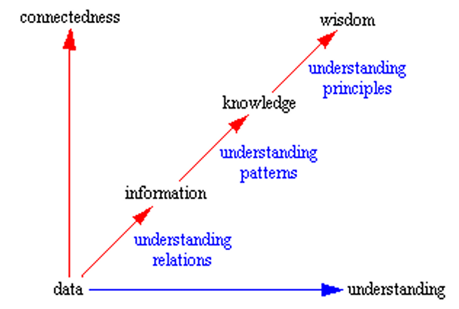
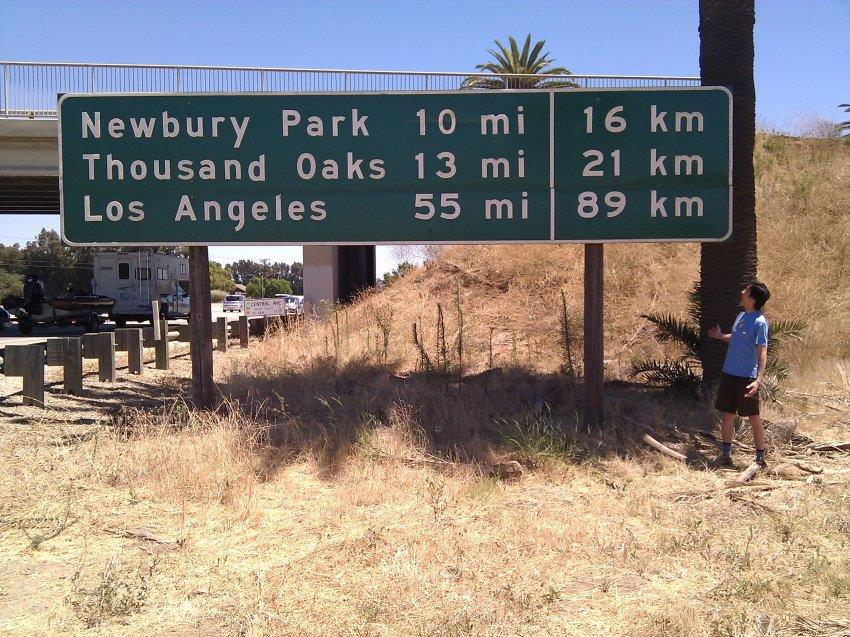
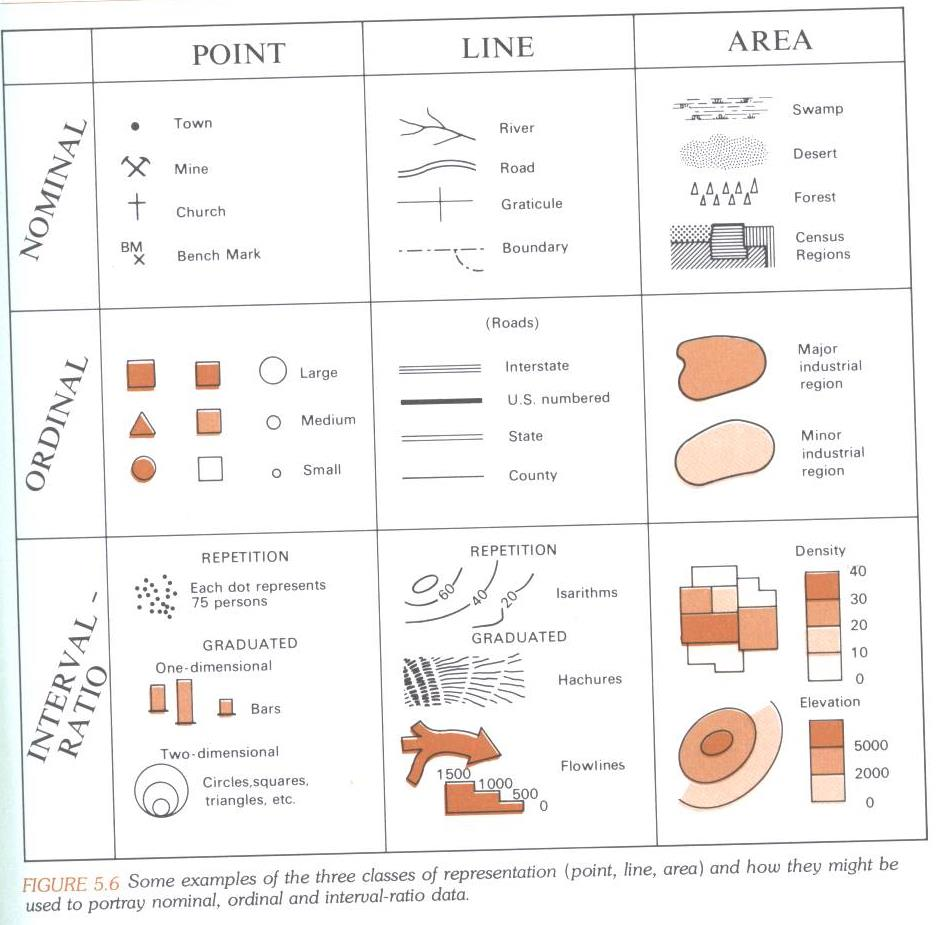
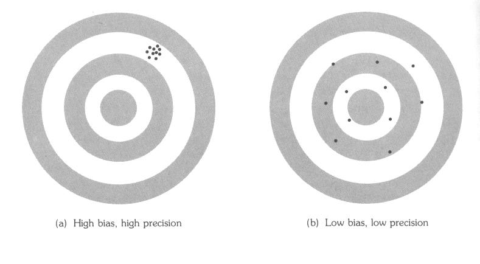
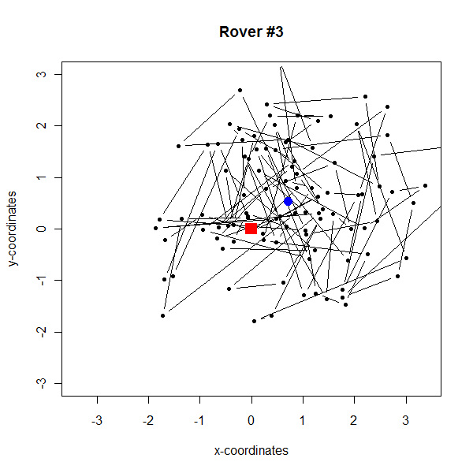

Chapter 01: Data and Statistics
1 Meaning of Data, Information, Knowledge, and Wisdom in Data Analytics
According to Russell Ackoff, a systems theorist and professor of organizational change, the content of the human mind can be classified into a hierarchy of categories:
1.1 The Hierarchy
Data: symbols (either numeric or iconic)
Data is raw. It simply exists and has no significance beyond its symbolic existence. It can exist in any form, usable or not.
Information: data that are processed to be useful; i.e., data that are placed into a context (relationship to similar data) providing answers to “who”, “what”, “where”, “how much” and “when” questions
Information is data that has been given meaning by way of relational connection, such that \(x_1 < x_2\) or \(x_1 \text{ precedes } x_2\) etc.
Knowledge: application of data and information; answers “how” questions leading to some causal statements.
Knowledge is the appropriate connection of information, such that when X increases Y will also increase.
Wisdom: Construction of individual pieces of knowledge into a “general” framework (perhaps even theory including the explanation of apparent contradictions. A theory should be general enough to allow predictions based on new observations.
Developing an encompassing perspective of understanding real world events.
Note: “Big data” exploration and mining cannot improve our wisdom, it just provides a description of observed patterns in given data (see BIGDATAANDSTATISTICS.PDF).
1.2 Understanding Connects All Levels
According to Gene Bellinger, Durval Castro, and Anthony Mills “understanding” connects all levels:

Science advances by:
- [a] uncovering meaningful patterns within previously noisy information or
- [b] explaining the mechanism and conditions under which patterns emerge,
- [c] revising current knowledge so it can accommodate in a unified framework (a theory) previously contradicting information.
Statistics provides tools that help us uncover patterns in observed data and test hypotheses about their underlying data generating process.
Hypotheses are derived from theory and establish predictions which can be tested against given empirical observations.
2 Philosophy of Scientific Inference (skipped)
(Based on Kenneth J. Rothman and Sander Greenland, 1998. “Chapter 2: Causation and Causal Inference” in Modern Epidemiology, 2nd edition, Lippincott Williams & Wilkings, Philadelphia. pp 7-28)
2.1 Objectives of Science
Develop a logical structure for the objects and events of the world surrounding us. This logical structure erects a theoretical framework that relates objects and events with each other and explains why relationships among them exist.
This logical structure should be generally applicable. The goal of the logical structure is to understand universal cause-effect relationships, predict and control objects and events.
3 Experimental versus Empirical Research
One way to acquire knowledge is to conduct controlled experiments by systematically varying a condition that is a potential cause for a specific effect, while:
- [1] holding constant all other potential conditions or
- [2] randomly spreading other potential conditions so that their influences onto an effect cancel each other out.
Theory in experimental studies allows us to make predictions about the experiment’s outcome. If the observations match the prediction, then the theory is tentatively supported, otherwise it needs to be refuted or revised.
We have only limited capabilities in empirical research to control the variability of potential other causes as well as the initial conditions.
We must use a small set of empirical observations as they come available. There is no control over variability.
However, by carefully designing an empirical study and its associated data sampling scheme, we still can control for biases which are induced by unknown external circumstances.
Definition: Biases emerge from unknown external circumstances that systematically influence the observed data.
Bias can be controlled either by randomization of sample observations (any systematic influences are dispersed over the sample in the hope that they cancel each other out).
Alternatively it can be controlled in case-control studies by stratified sampling or randomized controlled trials.
- In addition, we may end up with only “one” sample (e.g., one specific census, one map pattern). However, by adopting the process based perspective with an underlying super-population this one observation may also be conceived as a random sample from that hypothetical underlying process.
4 Importance of Variability in the Sciences
Uncertainty cannot exist without variability. The larger the variability the higher the uncertainty.
Suppression of variability changes perception of a causal mechanism:
Example: Yellow shanks (part of leg) are a characteristic occurrence in a certain genetic strain of fowls, if they are fed on yellow corn.
Two perceptions of causes due to suppressed variability:
Genetic Explanation (no variation in feed): Fowls just fed only yellow corn → then the presence or absence of the gene determines yellow shanks.
Environmental Explanation (no variation in genetics): Fowls with just the specific genetic strain are fed yellow corn or other corn → the corn determines yellow shanks.
5 Measurement Theory
- A measurement numerically represents a property of a particular object/event and places it on a measurement scale (scale has a different meaning here than that of floating-point number scale in computer sciences), so it can be compared to measurements taken from other objects (step from data → information). This implies that there must be variability among the objects.
What conditions need to be present to be able to perform measurements:
- Objects are empirically related to each other, e.g., person \(\mathcal{A}\) is taller than person \(\mathcal{B}\), person \(\mathcal{A}\) has brown eyes but person \(\mathcal{B}\) has green eyes.
5.1 Key Concepts in Measurement Theory
Measurement theory is concerned with the development of:
- a numerical scale that reflects the empirically observed relationships among the objects and
- the assignment of a numerical representation to the objects’ properties.
Different assignment rules of numerical values to properties of objects, which preserve the empirically observed relationships among the objects, are classed together into a measurement scale.
E.g., kilometers and miles share a common measurement scale.
5.1.1 Trilateration Example
 
Physical properties are easier to measure than abstract social, economic, or psychological concepts.
6 Measurement Scales
The measurement scales and their associated relationships are hierarchically organized:
- Higher order scales are inheriting the properties of subordinate scales.
- Progressing from a lower order scale to a higher order scale allows becoming more specific in expressing relationships among the measurements.
- In contrast, moving from a higher order scale to a lower order scale leads to a loss of information.
6.1 Overview over the System of Scales
6.1.1 Nominal Scale
Numbers are used only to distinguish among objects and label their attributes. I.e., numbers are used as symbols.
- Allows classifying similar observations together into groups
- Applicable mathematical relationships: \(= \text{ and } \neq\)
- Notes: Categorical variables allow to count the frequency of equal values in a sample or a population.
- R codes categorical variables into
factors, which group similar objects together.
6.1.2 Ordinal Scale
Numbers are used to place objects in an order.
- Allows ranking observations.
- Applicable mathematical relationships: \(=, \neq, < \text{ and } >\)
- Notes: Sample observations can be ranked. Due to the coarseness of the measurement instrument (lack of precision), some observations may have equal rank (also called ties).
6.1.3 Interval Scale
Scale on which equal numerical intervals between objects represent equal differences.
- A fixed step length is defined, which is equal at each location on the scale.
- Applicable mathematical relationship: \[=, \neq, <, >, \text{ and the transformation } y = b_0 + b_1 \cdot x \text{ without changing the relation}\] with \(b_1 > 0\) (the fixed distance unit/step length) and an arbitrary point of origin \(b_0\) on the scale.
- Notes: Equal difference allows performing summations and subtractions of values, but not size comparisons.
6.1.4 Ratio Scale
Scale with a true zero reference point allowing to measure size differences by ratios.
- Allow using size comparison phrases such as “twice as big”.
- Applicable mathematical relationships: \[=, \neq, <, >, \text{ and the transformation } y = \underbrace{b_0}_{=0} + b_1 \cdot x\] with \(b_1 > 0\) (the distance unit) the origin \(b_0 = 0\) constraint to zero (fixed base level).
- Notes: Metric and continuous variable. Frequently used in the physical sciences.
6.2 Example: Hierarchy of Temperature Scales
(see the history of temperature scales)

| Scale | Zero Point | Description |
|---|---|---|
| Kelvin | 0 | Absolute zero |
| Fahrenheit | 0 | Arbitrary |
| Celsius | 0 | Freezing point of water |
| Ordinal | [1] freezing, [2] cold, [3] mild, [4] hot, [5] burning | Ordered categories |
| Nominal | uncomfortable, comfortable, uncomfortable | Unordered categories |
6.2.1 Transformations and Recoding
- Measurements can be recoded and transformed.
- Example: Transforming Celsius into Fahrenheit: \[[°F] = [°C] \times \frac{9}{5} + 32\] or Fahrenheit into Celsius: \[[°C] = ([°F] - 32) \times \frac{5}{9}\] vice versa.
- Furthermore, recoding temperatures: mild → comfortable, hot and cold → uncomfortable.
6.2.2 Additional Properties
Metric measurement scales can have a fixed upper and lower bound within which the numerical representation of an attribute can vary. Example: The percentage scale.
Concatenation (counting) operations allow combining and aggregating ratio-scaled observations. Example: [area of region A] + [area of region B] or number of people in both areas.
Note: Measurements on areal objects are always based on aggregation of elemental areal units within the area.
How many reference copies are necessary to give the observed aggregated value? The unit size of the reference copy determines the resolution of the scale and subsequent measurement precision. The smaller the unit size the higher the precision (remember the machine epsilon).
6.3 Further Differentiation
Discrete measurements comprise of a countable number of representations (usually a small number of integer numbers).
Continuous measurement allow for fractional representations. Continuous measurements are always quantitatively scaled (floating point numbers).
Fundamental measurements are directly observable, e.g., distances.
Derived measurement must be calculated from fundamental measurements:
- the ratio of different units e.g., kilo-watt-hours-per-day = power-consumption-during-billing-period / length-of-billing-period, the population density
- the rate of equal units where the numerator is part of the denominator: murders among total number of crimes, the percentage of population living in urbanized areas.
6.4 The Measurement Scale and Spatial Objects

Figure: Some examples of the three classes of representation (point, line, area) and how they might be used to portray nominal, ordinal and interval-ratio data.
7 Data Problems
Ultimately, the data link back to objects and events in the real world on which the data were measured. We want to make statements about the real world by using the data which were generated by it.
We would like to know how the world around us is operating and perhaps manipulated it, that is, we would like to understand the underlying data generating mechanism. (see MATHMUSICSTATSLITERARUE.PDF)
Data tell a story about what happens in the real world. Always be critical and check if the perceived story makes “sense”.
Based on the instructor’s experience advising graduate students, some students have difficulties to relate data and their geo-statistical analysis results to the real world situations.
Geographic Information Systems just use models which are abstractions of the real world – we must understand the connection between the real world and the model.
7.1 Critical Data Analysis
An analyst must know as much as possible about the measurement process that has been used to generate the observed data. She/he must make sure that the data make “sense”:
What do we expect to see → do the data and analysis results match our expectations? If they do not match our expectations, then we either have messed up or we are discovering something surprisingly and previously unknown to us.
One way to gain confidence is through replicability by using:
- [a] two independent samples or
- [b] two different analysis approaches.
If the outcomes match, then we are more confident in the feasibility of the results. In statistics this is called meta-analysis.
In technical systems, such as in aviation, replicability is embedded in redundant systems.
7.2 Common Problems with Data
Instrument calibration, instrument precision and rounding.
Dealing with putative outliers and re-editing and inconsistent data.
Example: Ozone layer hole over Antarctica has not been discovered before mid-1980 because the software analyzing data from the Nimbus-7 satellite was programmed to delete extreme measurements. Extreme measurements were initially regarded to reflect a sensor problem.
Omissions or selective over-sampling of specific groups of data.
Software limitations and operation: Example: Trying to import 120,000 records into an old 16-bit dBase file or incorrectly joining two different data sets.
Aggregation into summary measures drops the variability among the objects by compressing their attributes into a simple summary measure.
Errors in the data may be systematic (e.g., biased) or random variability:
 
Figure 2: Bias and lack of precision in sample results.
- High bias, high precision
- Low bias, low precision
- High bias, low precision
- Low bias, high precision
7.3 GPS Measurement Example
Example: A temporal sequence of 100 measurements were taken by 4 GPS units at the same time and the same fixed location. The red square is the true location and the blue dot the average measured location.
- What errors and random variations influence the measured locational information of the GPS receiver?
- Is there some temporal persistence in the measurements?


 
8 Meaning of Statistics
- Statistics deals with describing, summarizing, handling and analyzing the variability within data
8.1 Descriptive Statistics
Collection, organization, and presentation of data
Summary: Reducing the variability in a distribution into a small number of meaningful characteristics
\(\Rightarrow\) minimize the effects of information loss. Learn how to meaningfully interpret the summary statistics. Perform comparisons to understand the internal variability
8.2 Inferential Statistics
Draw conclusions about an unknown population (or data generating process) from a random or a structured random samples. Bayesian statistics incorporates prior believes about the underlying population. The sample must be representative of its underlying population.
8.3 Specialized Meaning
Development and evaluation of methodologies to collect data, the presentation of data, and the analysis of data under uncertainty.
- [a] Methods leading to summarization of vast amounts of data within a given model framework,
- [b] theory validation and generalization,
- [c] forecasting (planning, selection of course of action)
9 Other Key Terms
| Term | Description |
|---|---|
| Data organization in tables (matrices) | How data is structured |
| Statistical population | The complete set of items |
| Population characteristics | Parameters describing the population |
| Variable | A measurable attribute |
| Population census versus sample | Complete enumeration vs. subset |
| Random sample | Probabilistically selected subset |
| Sampling error versus non-sampling or data acquisition errors | Random vs. systematic errors |
| Statistical estimation versus hypothesis testing | Point/interval estimation vs. decision making |
| Validity, accuracy and precision of measurements | Quality of measurements |
10 Summary
This chapter covered the fundamental concepts of data and statistics in the context of geospatial data analysis:
- Data → Information → Knowledge → Wisdom hierarchy
- Measurement theory and the importance of variability
- Measurement scales: Nominal, Ordinal, Interval, Ratio
- Data problems: Bias, accuracy, precision, outliers
- Statistics as a tool for describing and analyzing variability